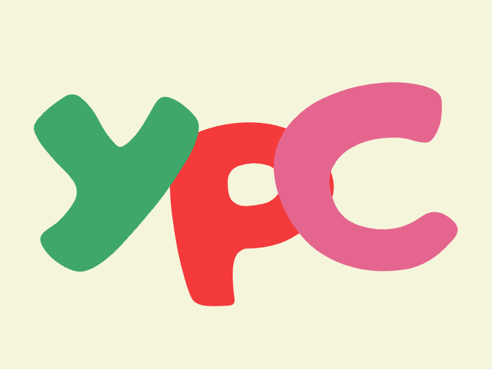
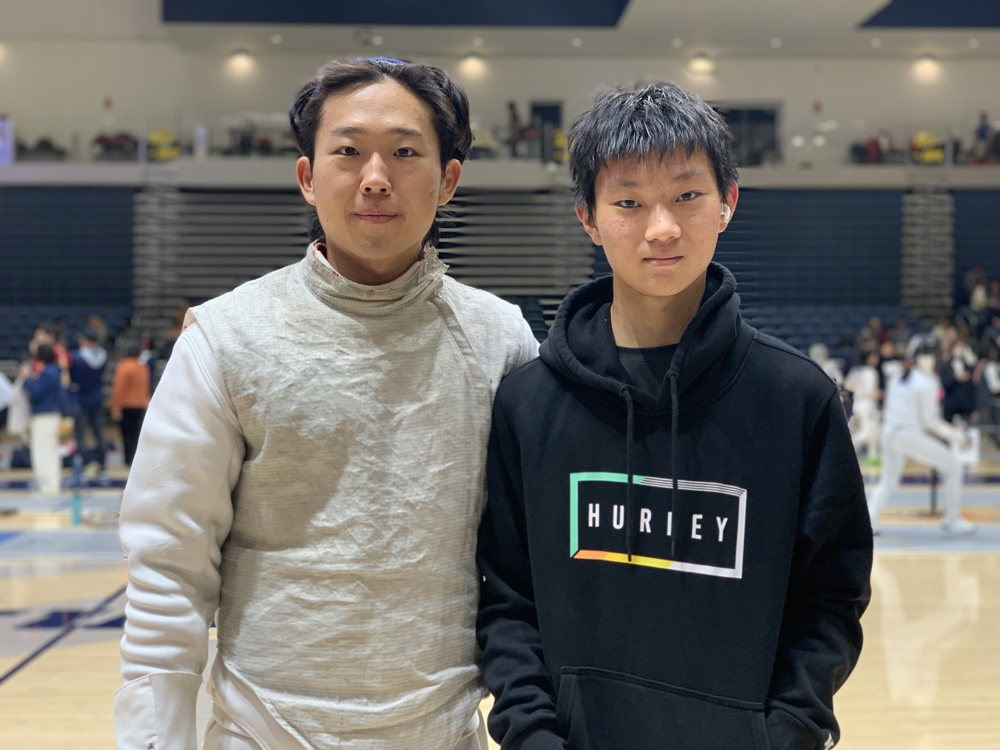

Not only am I a student but also a fencer. Fencing has been a big part of my life. I started fencing when I was 12 in Singapore and did it just for fun. But when I moved over to the US, I started competing in tournaments and found the experience enjoyable. Now, I fence in tournaments spanning from regionals to nationals. I hope to attend some international tournaments when I have the time to do so. Sports has always been a big part of my life and is what I like to do during my free time.